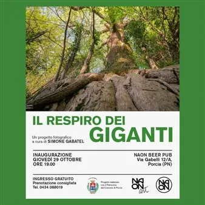

da gio 29 ott a dom 31 gen
Il respiro dei giganti
E' una celebrazione della natura, ma anche un invito ad osservare. La mostra vuole far riflettere sull'indifferenza moderna: oggi tendiamo a considerare l'ambiente come uno sfondo inanimato o un semplice spazio da occupare, dimenticando il valore di ciò che abbiamo ereditato e…
 Indicazioni
Indicazioni
- Costi e prenotazioni
- Costo non indicato · Prenotazione non indicata
- Programma
- Programma da verificare. Apri la fonte ufficiale per orari e possibili aggiornamenti.
- In caso di maltempo
- Nessuna indicazione specifica pubblicata.
- Note
- Acquisito automaticamente dalla fonte.
L’EVENTO
Descrizione completa
E' una celebrazione della natura, ma anche un invito ad osservare. La mostra vuole far riflettere sull'indifferenza moderna: oggi tendiamo a considerare l'ambiente come uno sfondo inanimato o un semplice spazio da occupare, dimenticando il valore di ciò che abbiamo ereditato e che stiamo trasformando radicalmente.
Questa mostra fotografica dedicata agli alberi monumentali e agli ambienti boschivi del Veneto e del Friuli. Un percorso visivo che invita a riflettere sul valore degli antichi boschi e dei grandi alberi, custodi silenziosi di storie, paesaggi e comunità. Attraverso immagini e fonti storiche, la mostra riattiva il legame profondo tra uomo e natura, ricordandoci un'alleanza che attraversa i millenni.
Gli alberi presenti in questa esposizione:
- Quercia di Villanova di Fossalta di Portogruaro
- Quercia di Bonavilla
- Quercia di Camino al Tagliamento
- Faggio di Vallorch
- Faggio di Tambre/Spert
- Platano di Carpinello (Forlì)
- Quercia (non monumentale) di Ariis
- Quercia del parco di Villa Ottelio (Ariis)(non monumentale)
- Tasso del Prescudin
- Tulipifero di Porcia
- Faggio di Stuet
- Castagno di Pulfero
- Tiglio di Malborghetto
- Tiglio di Napoleone (Le Rutte Piccolo)
INGRESSO GRATUITO.
prenotazione consigliata Tel. 0434 088019
SIMONE GABATEL
Simone Gabatel lavora come professionista da otto anni, ma il suo occhio si è formato molto prima. Tutto è iniziato con il disegno, una passione d'infanzia che lo ha portato prima a studiare grafica e fotografia al Liceo Artistico "Galvani" di Cordenons, e poi a specializzarsi con una laurea in Scienze e Tecnologie Multimediali a Pordenone. Questo mix tra istinto creativo e approccio tecnico definisce il suo stile attuale.
Cresciuto in equilibrio tra città e campagna, Simone ha sempre mantenuto un legame stretto con l'ambiente. Grazie alle escursioni con Alberiamo ed il CAI di Portogruaro, ha riscoperto i paesaggi del Veneto e del Friuli con una consapevolezza diversa, decidendo di trasformare questa esplorazione del territorio e delle proprie origini nel progetto che vedete oggi.
IL PROGRAMMA
Programma e orari
Appuntamenti raccolti dalle fonti elencate. Dove manca un orario, non è ancora disponibile in questa scheda.
Programma pubblicato
- Dal 2026-10-29 al 2027-01-31
INFORMAZIONI UTILI
Prima di partire
- Controllare la fonte prima di partire.
ORGANIZZAZIONE